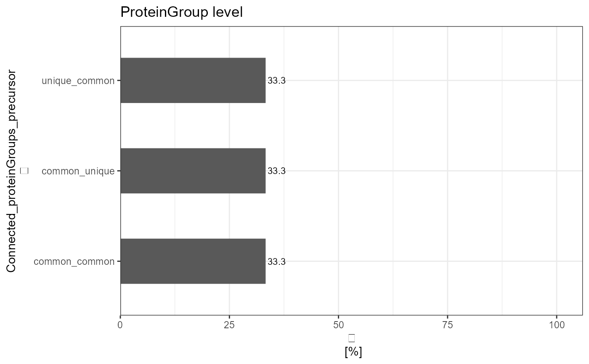

Analysis of the traceR_connected_pg_prec or traceR_connected_mod.pep_prec column
Arguments
- input_df
A tibble with flowTraceR´s connected level information e.g. traceR_connected_pg_prec.
- connected_levels
Choose either
proteinGroup_precursorormod.peptides_precursorfor the corresponding traceR connection. Default is proteinGroup_precursor.- count_level
Counts appearances per possible connections. Choose either
upperorlower- lower is always precursor level; upper is either proteingroup or mod.peptide level depending on chosenconnected_levels. Default is upper. Duplicate entries are removed.- plot
Logical value, default is TRUE. If
TRUEbarplot is generated, ifFALSEreport as output.- plot_characteristic
if
absolutethe absolute count is displayed in barplot, ifrelativethe relative count is displayed in barplot. Default is absolute.plot_characteristichas no influence on report.
Details
Shows the absolute and relative counts of possible connections - unique_unique/unique_common/common_unique/common_common of the respective column - as report or plot.
Examples
# Load libraries
library(dplyr)
#>
#> Attaching package: 'dplyr'
#> The following objects are masked from 'package:stats':
#>
#> filter, lag
#> The following objects are masked from 'package:base':
#>
#> intersect, setdiff, setequal, union
library(stringr)
library(ggplot2)
#> Warning: package 'ggplot2' was built under R version 4.0.5
library(tibble)
# DIA-NN example data
data <- tibble::tibble(
"traceR_connected_pg_prec" = c("common_common", "common_unique", "unique_common"),
"traceR_traced_proteinGroups" = c("common", "common", "unique"),
"traceR_traced_mod.peptides" = c("common", "unique", "common"),
"traceR_traced_precursor" = c("common", "unique", "common"),
"traceR_proteinGroups" = c("P02768", "P02671", "Q92496"),
"traceR_precursor" = c("AAC(UniMod:4)LLPK1", "RLEVDIDIK2", "EGIVEYPR2")
)
# Upper level - proteingroup level - how many proteingroups have a specific categorization
# Plot
analyze_connected_levels(input_df = data,
connected_levels = "proteinGroup_precursor",
count_level = "upper",
plot = TRUE,
plot_characteristic = "relative")

#Report
analyze_connected_levels(input_df = data,
connected_levels = "proteinGroup_precursor",
count_level = "upper",
plot = FALSE)
#> # A tibble: 3 x 3
#> Connected_proteinGroups_precursor absolute_count relative_count
#> * <chr> <int> <dbl>
#> 1 common_common 1 33.3
#> 2 common_unique 1 33.3
#> 3 unique_common 1 33.3